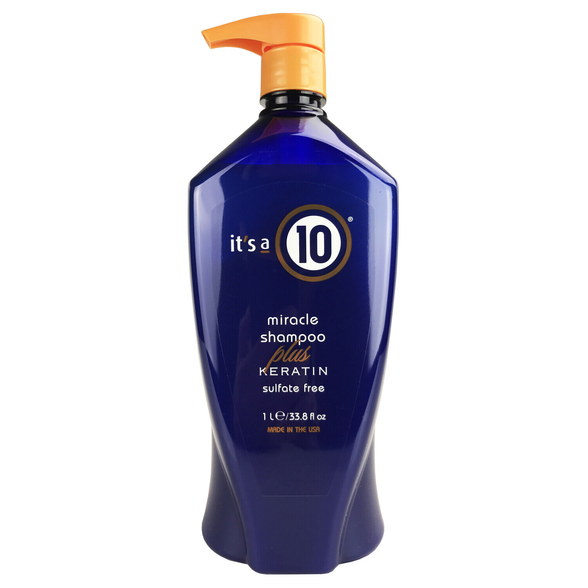
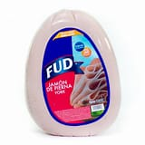
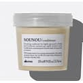
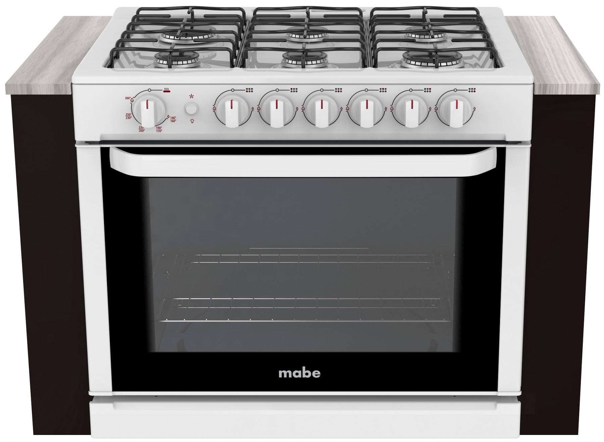

Walmart es una cadena de hipermercados cuyo esquema de ventas es al menudeo. Son tiendas con un amplio surtido, desde abarrotes, perecederos y alimentos preparados, hasta ropa y mercancías generales. Sus dimensiones son de 8 metros de alto, 110 m de largo y 80 m de ancho. Son tiendas de autoservicio enfocados a consumidores ubicados en ciudades a partir de los 100,000 habitantes, cuya superficie de venta son de los 6,000 hasta los 11,000 metros cuadrados
| Producto | Descripcion | Imgen |
|---|---|---|
| shampoo | Estos son jabones que eliminan los residuos de la superficie del cuero cabelludo y del cabello. |  |
| jamon | Jamón de Pierna York FUD kg es 97 por ciento libre de grasa y está elaborado con pierna trasera de cerdo. |  |
| acondicionador | ¿Sabes para qué sirve el acondicionador? Por sus propiedades humectantes, este producto pule, alisa, cierra y sella la hebra capilar. |  |
| estufa | Se llama estufa al aparato que produce calor y lo emite para calentar ambientes habitados. Fue un invento que mejoraba mucho. |  |